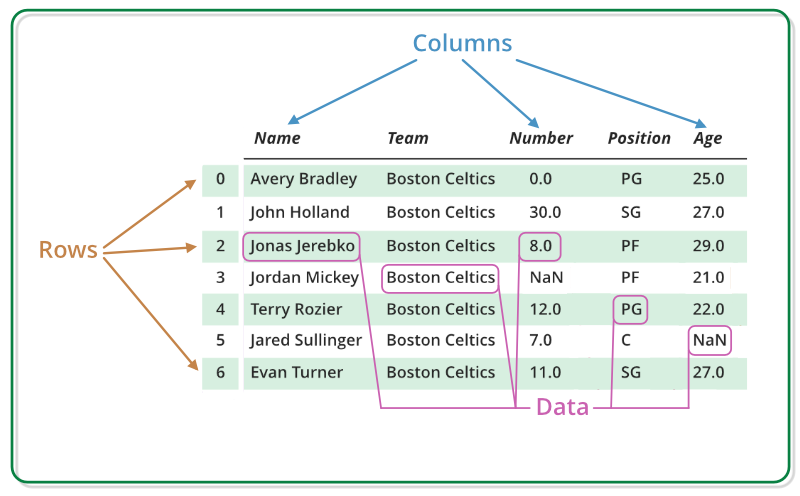
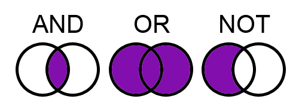

Introdução ao
Introdução ao
Monitoria I de Técnicas de Pesquisa em Economia
16 de maio de 2025
I - Introdução ao R
O que é a linguagem R?
- Ferramenta para análise de dados;
- R é uma linguagem de programação orientada a objetos, criada para quem trabalha com análise de dados e estatística de forma estruturada.
- Versátil e com ampla aplicação;
- Oferece ferramentas que permitem lidar com grandes conjuntos de dados, o que é muito útil em contextos atuais que envolvem big data.
- Tipagem fraca.
- Permite operações entre diferentes tipos de dados sem a necessidade explícita de conversão.
Por que usar o R?
- Exploração e visualização de dados;
- A linguagem oferece recursos avançados para criar gráficos e visualizações que ajudam a entender melhor os dados e comunicar resultados de forma clara.
- Open-source.
- Por ser um software de código aberto, possui uma comunidade ativa que desenvolve e compartilha pacotes, por isso, o R dispõe de uma vasta gama de aplicações e suporte colaborativo.
O que é o RStudio?
- Ambiente integrado para programar em R;
- O RStudio é um espaço pensado principalmente para quem usa R, reunindo tudo o que é necessário para escrever, rodar e revisar códigos com mais organização.
- Facilita o dia a dia com R.
- Ele traz recursos como editor de scripts, gerenciador de projetos e ferramentas para depurar o código.
Passos da instalação
Visite CRAN - The Comprehensive R Archive Network e baixe a linguagem, através de um arquivo executável, para seu sistema operacional;
Visite RStudio Desktop e baixe o instalador para seu sistema operacional;
Siga as instruções fornecidas nos instaladores para completar o processo de instalação.


RStudio Cloud
Visite a Posit Cloud para acessar e utilizar o RStudio sem a necessidade de instalação local;
Necessário realizar login (através de uma conta Google, Github, entre outros) para acessar o RStudio Cloud.
Criação de um projeto


Pacotes
Os pacotes no R são coleções de funções e conjuntos de dados desenvolvidos pela comunidade.
Um pouco sobre tidyverse

Fonte: Smith (2019).
Um pouco sobre tidyverse
O tidyverse oferece uma alternativa aos métodos base do R para análise de dados em dados organizados de forma “arrumada” (tidy data).
── Attaching core tidyverse packages ──────────────────────── tidyverse 2.0.0 ──
✔ dplyr 1.1.4 ✔ readr 2.1.5
✔ forcats 1.0.0 ✔ stringr 1.5.1
✔ ggplot2 3.5.1 ✔ tibble 3.2.1
✔ lubridate 1.9.3 ✔ tidyr 1.3.1
✔ purrr 1.0.2
── Conflicts ────────────────────────────────────────── tidyverse_conflicts() ──
✖ dplyr::filter() masks stats::filter()
✖ dplyr::lag() masks stats::lag()
ℹ Use the conflicted package (<http://conflicted.r-lib.org/>) to force all conflicts to become errorsOperador pipe
O operador pipe no R é uma ferramenta poderosa para encadear operações e facilitar a leitura e escrita de código. Existem dois operadores de pipe comuns:
Operador
%>%(pipe do pacotemagrittr)- O operador
%>%é usado para encadear funções, passando o resultado de uma função como argumento para a próxima função.
- O operador
Operador
|>(pipe do pacote base)- Introduzido no R 4.1.0, o operador pipe nativo
|>é uma alternativa ao operador domagrittr, oferencendo uma maneira semelhante de encadear operações.
- Introduzido no R 4.1.0, o operador pipe nativo
R como calculadora
A linguagem R nos permite realizar cálculos simples e complexos, fornecendo operações aritméticas como adição, subtração, multiplicação, divisão e outras operações matemáticas.
- Potência
R como calculadora
- Módulo
- Divisão inteira
- Raiz Quadrada
II - Estruturas e Manipulações de Dados
Tipos de estruturas de dados
Na linguagem R, há várias estruturas de dados fundamentais que são usadas para armazenar e manipular informações de maneiras específicas.
- Vetores: Unidimensionais;
- Matrizes: Bidimensionais;
- Data Frames: Bidimensionais;
- Arrays: Multidimensionais;
- Listas: Flexíveis.

Fonte: Ceballos e Cardiel (2013).
Tipos de estruturas de dados
Fonte: Stauffer et al. (2025).
O que são data frames?
Os data frames são estruturas de dados fundamentais no R, muito utilizadas para armazenar conjuntos de dados tabulares, onde as colunas podem conter diferentes tipos de classes (numéricos, caracteres, lógicos, etc.).
- Quanto a sua estrutura, temos:
- Nome das Colunas (variáveis): Cada coluna em um data frame tem um nome que a identifica, representando seus respectivos atributos;
- Rótulos de Linhas (observações): As linhas podem ser rotuladas para identificar cada observação de maneira única ou significativa.
O que são data frames?

Fonte: GeeksforGeeks (2025).
O que são vetores?
Um vetor é uma estrutura de dados que contém elementos do mesmo tipo. Pode ser numérico, de caracteres, lógico, etc.
Criando data frames
Podemos combinar os objetos ano, revistas e impacto em um data frame.
Data frames modernizados
Tibbles são data frames modernizados, introduzidos pelo pacote tibble no tidyverse. Eles foram projetados para corrigir algumas das limitações dos data frames tradicionais e para melhorar a usabilidade.
Criando listas
Uma lista é uma coleção ordenada de elementos que podem ser de diferentes tipos. Diferente de vetores, que só podem conter elementos de um único tipo, listas podem armazenar números, caracteres, vetores, data frames e até mesmo outras listas.
O que é o dplyr?
Parte do
tidyverse, odplyré um pacote do R que incorpora uma gramática para transformação de dados, ou seja, fornece funções (verbos) para fazer operações com tabelas (isto é, data frames ou tibbles);Ele permite filtrar, selecionar, organizar, transformar e resumir dados de forma encadeada. E qual a finalidade disso? um código limpo.
Principais funções (verbos)
filter(): filtra linhas (condições)
select(): seleciona colunas
mutate(): cria/edita colunas
arrange(): ordena linhas
summarise() ou reframe(): resume dados
group_by(): agrupa dados para sumarização
Operadores lógicos
- Operadores Relacionais:
- Igual a (
==); - Diferente de (
!=); - Maior que (
>); - Menor que (
<); - Maior ou igual a (
>=); - Menor ou igual a (
<=); - Pertence a (
%in%).
- Igual a (
- Também podemos utilizar operadores lógicos, tais como AND, OR e NOT, representados por
&,|e!, respectivamente.
Utilizando dplyr na prática
Com os nossos dados, podemos filtrar artigos a partir de 2023, calcular a média de impacto por revista e ordenar do maior para o menor.
Exportação de dados
Exportar dados é uma tarefa comum no R, especialmente quando se deseja salvar resultados de análises ou compartilhar informações com outros usuários.
- Exportando para CSV
- Exportando para Excel (xlsx)
- Exportando para Texto (txt)
Importação de dados
Neste caso, ao importar dados no R, estaremos carregando conjuntos de dados externos para manipulação e/ou visualização.
- Importando para CSV
- Importando para Excel (xlsx)
- Importando para Texto (txt)
Exercício de Fixação I
Hora de praticar!
Acesse o arquivo main.pdf, que está dentro da pasta atividade, localizada em “tecnicas-pesquisa-economia” no repositório monitorias-ufdpar, ou clique aqui para acessá-lo diretamente.
III - Bibliometria com o R
O que é bibliometria?
Bibliometria é um campo das áreas da biblioteconomia e da ciência da informação que emprega o estudo quantitativo da produção científica, através de métodos estatísticos e matemáticos para analisar publicações acadêmicas, como artigos, livros, teses e conferências.
- Exemplos de estudos bibliométricos:
Contagem de publicações:Quantos artigos sobre “sustentabilidade” foram publicados entre 2010 e 2020?Análise de citações:Qual é o artigo mais citado sobre Inteligência Artificial?Análise de palavras-chave:Quais são os termos mais recorrentes nas pesquisas sobre Mudanças Climáticas?
E qual a sua contribuição?
| Aplicação | Descrição |
|---|---|
| Mapeamento de áreas de conhecimento | Identificar tendências, tópicos emergentes ou temas em declínio em uma disciplina. |
| Análise de tendências científicas | Ver como um tema ganha ou perde relevância ao longo do tempo. |
| Avaliação de desempenho acadêmico | Avaliar a produtividade de autores, universidades ou países (por número de publicações, citações etc.). |
| Identificação de redes de colaboração | Descobrir grupos de pesquisa que atuam juntos (análise de coautoria). |
| Tomada de decisão em políticas científicas | Ajudar agências de fomento e universidades a definir prioridades de investimento em ciência. |
Pacote Bibliometrix
Assim como o dplyr, mencionado anteriormente, o bibliometrix também é um pacote do R criado para realizar análises bibliométricas completas, desde a importação dos dados até a construção de gráficos e redes científicas.
- Criado por Aria e Cuccurullo (2017), além de outros colaboradores a partir de 2017.
- Objetivo: fornecer uma solução open-source para análise bibliométrica e de ciência da ciência (science mapping);
- Fontes de dados compatíveis:
Acesso as bases de dados acadêmicas
Para realizar análises bibliométricas no R, primeiro é necessário baixar os dados de bases acadêmicas confiáveis.
No Brasil, temos acesso gratuito a bases internacionais de alta qualidade por meio da:
- Coordenação de Aperfeiçoamento de Pessoal de Nível Superior (CAPES)
- O Portal de Periódicos da CAPES oferece acesso gratuito para estudantes, professores e pesquisadores de instituições públicas e privadas conveniadas.
- Por meio dele, é possível acessar bases como WoS, Scopus, ScienceDirect, SpringerLink, entre muitas outras.
Como acessar o Portal de Periódicos da CAPES?
Estando dentro da universidade (rede da instituição) ou
Pelo sistema de CAFe (Comunidade Acadêmica Federada), usando login e senha institucionais.
Passos para baixar dados bibliográficos
Operadores booleanos nas pesquisas acadêmica
- AND: inclui todos os termos;
- OR: inclui qualquer um dos termos;
- NOT: exclui termos indesejados

Pesquisa avançada em bases acadêmicas
- Web of Science
Permite criar pesquisas mais específicas usando filtros como tema, autor, instituição, tipo de documento, ano de publicação etc.
- Scopus
Importação de dados bibliográficos
A função convert2df() é usada para ler os dados exportados das bases e transformá-los em data frames organizados, prontos para análise.
- Importar dados da Web of Science (.txt)
- Importar dados da Scopus (.csv)
Importação de dados bibliográficos
Após importar os dados da Web of Science e Scopus separadamente, como demonstrado em 1. e 2., podemos combinar estes dados em um único data frame.
Sobre os dados gerados pelo bibliometrix
Quando importamos e transformamos os dados com convert2df(), o bibliometrix organiza as informações em uma tabela (data frame) com linhas e colunas.
Rows: 477
Columns: 8
$ PY <dbl> 2024, 2023, 2024, 2024, 2017, 2023, 2018, 2024, 2015, 2020, 2022…
$ AU <chr> "WILDOWICZ-SZUMARSKA A;OWSIAK K", "CEVIK S;JALLES J", "HUYNH C;H…
$ TI <chr> "IMPACT OF CLIMATE CHANGE ON INCOME INEQUALITY IMPLICATIONS FOR …
$ SO <chr> "ECONOMICS AND ENVIRONMENT", "ENERGY POLICY", "JOURNAL OF THE AS…
$ DE <chr> "CLIMATE CHANGE; INCOME INEQUALITY; ECONOMIC GROWTH", "INCOME IN…
$ TC <dbl> 1, 29, 4, 11, 22, 2, 24, 2, 58, 4, 8, 21, 6, 5, 0, 11, 19, 1, 0,…
$ DT <chr> "ARTICLE", "ARTICLE", "ARTICLE; EARLY ACCESS", "ARTICLE", "ARTIC…
$ AU_UN <chr> "UNIVERSITY OF BIALYSTOK;CRACOW UNIVERSITY OF ECONOMICS", "INTER…- Esses são apenas alguns dos campos mais usados. O glossário completo dos códigos de campos (Field Tags) pode ser acessado aqui.
Análise bibliométrica básica
A função biblioAnalysis() realiza uma análise exploratória automática dos dados bibliográficos importados.
- Esta função gera várias estatísticas descritivas, como:
- Depois de fazer a análise, pode-se usar
summary()para resumir e visualizar as principais informações.
Visualização dos resultados
Após realizar a análise bibliométrica básica, pode-se visualizar os principais resultados de forma gráfica usando a função plot().

Leitura no biblioshiny
Por que exportar a base?
O Biblioshiny (interface gráfica do bibliometrix) permite carregar dados manualmente a partir de um arquivo .xlsx.
Assim, se quisermos analisar uma base já tratada no R dentro do Biblioshiny, precisamos exportá-la para o formato Excel.
- Utilizamos a função
write.xlsx()do pacoteopenxlsxpara salvar o data frame como um arquivo .xlsx.
- Utilizamos a função
Leitura no biblioshiny
Exercício de Fixação II
Utilizando a palavra-chave “Climate Change Policy”, e considerando um escopo temporal dos últimos 10 anos (de 2015 a 2024), realize a atividade proposta a seguir.
Acesse uma das bases de dados disponíveis, Web of Science ou Scopus, por meio do Portal de Periódicos da CAPES. Após obter os resultados da pesquisa, exporte o conjunto de dados em formato Plaintext (.txt), caso utilize a Web of Science, ou em formato CSV (.csv), caso utilize a Scopus.
Após importar os dados para o R, utilize a função
biblioAnalysis()para gerar uma análise bibliométrica exploratória básica. Em seguida, executebiblioshiny()para abrir a interface gráfica do bibliometrix.